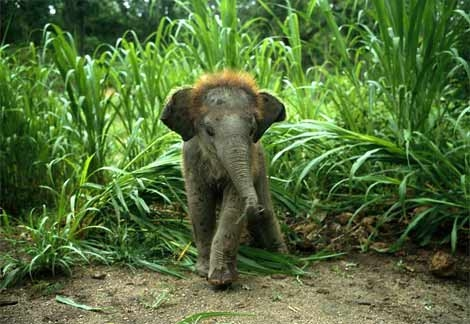
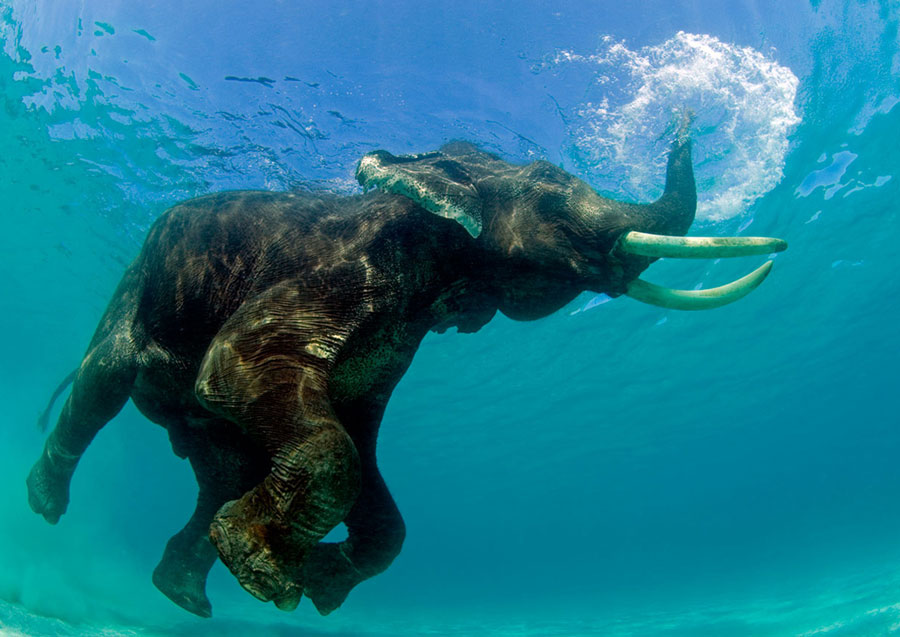
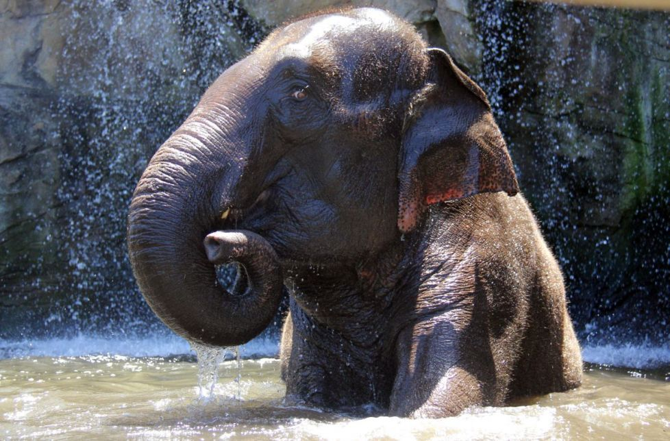

Durata de viata:Intre 50 si 70 ani
Unde traieste(mediu de viata): In paduri,savane,deserturi
Dieta: Erbivor
Clasa: Mamifere
Nume stiintific:Elephas maximus
Ce mananca (mancarea principala):Iarba,radacini,fructe
Predatori: Oameni,hiene
Cu multi ani in urma elefantul asiatic era o specie larg raspandita in toata Asia, ajungea pana in Caucaz. In prezent aceasta specie este in pericol de disparitie, ea mai apare in India, Cambodgia, Thailanda, estul Pakistanului, Insula Sumatra, Ceylon, Laos si Nepal. Ca si elefantul african se trage din grupul mastodontilor.
In India elefantii sunt ocrotiti prin lege deoarece numarul lor a scazut dramatic, din cauza extinderii plantatiilor de eucalipt, a terenurilor agricole si distrugerii lor datorita faptului ca sunt considerati mari daunatori agricoli.
Elefantul asiatic a suferit si el, din cauza distrugerii padurilor tropicale. In Asia au ramas doar 50.000 de exemplare, din care jumatate traiesc in India. Multi elefanti asiatici sunt domesticiti si se fac eforturi mari pentru asigurarea supravietuirii lor, prin protectia habitatului.
Pierderea habitatului reprezinta amenintarea cea mai mare a elefantului asiatic. Aproximativ 20% din populatia lumii locuieste in apropierea elefantilor asiatici, ceea ce inseamna ca habitatele lor devin din ce in ce mai mici. Printre motive se numara: razboaiele, dezvoltarea agriculturii, a asezarilor umane, defrisarile si reducerea cantitatii de hrana disponibila. Ei sunt mai putin expusi braconjului deoarece prea putini masculi au colti.
Curiozitati:
- In randul elefantilor africani, atat masculii, cat si femelele, poseda fildesi, in vreme ce la elefantii asiatici doar masculii se pot lauda cu fildesi.
- Elefantii asiatici au o capacitate extraordinara de memorare a sunetelor.
- Elefantii asiatici se deplaseaza in mod normal cu aproximativ 7 km / h, dar pot atinge si 40 km /h atunci cand alearga.
- Un pui de elefant greutate cantareste deja 120 de kilograme, iar la maturitate va atinge 2-3 tone.
- La elefantul african atat femelele cat si masculii au colti din fildes, in schimb la elefantul asiatic doar masculii au colti. 
- Urechile elefantului african sunt de doua ori mai mari decat cele ale elefantului asiatic.
- Elefantii sunt fiinte sociale, se ating frecvent si se ingrijesc reciproc prin incolacirea trompelor.
- Conform traditiei Buddhiste, Buddha a ales forma unui elefant alb ca una dintre multele sale incarnari pamantene.
- Sunt animale foarte prietenoase, usor de domesticit.
- Fildesii sunt foarte mici sau uneori inexistenti la femela.